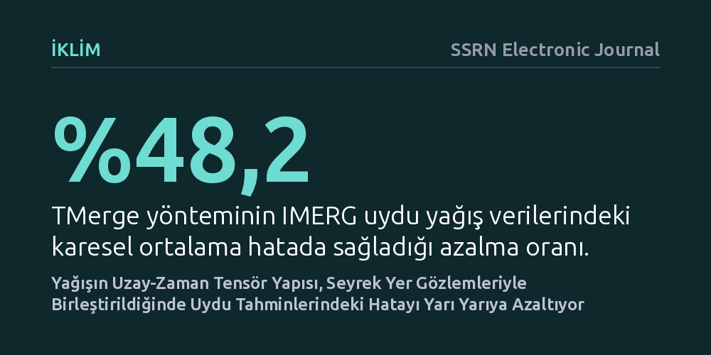

IKLIM · SSRN Electronic Journal · 2026-10-10
Araştırmacılar, ABD genelindeki günlük yağış verilerini çok boyutlu tensör modelleriyle inceleyerek uydu tahminlerinin seyrek yer istasyonu ölçümleriyle nasıl düzeltilebileceğini araştırdı. Geliştirilen TMerge yöntemi, yağışın uzay-zaman yapısını koruyarak uydu verilerindeki hata payını yüzde 48,2 azalttı ve korelasyonu 0,85'e çıkardı.
Uyduların sunduğu geniş ama yanıltıcı olabilen yağış haritalarının, yapay zekâya kıyasla çok daha az yer istasyonu verisiyle ve yüksek doğrulukla düzeltilebileceğini gösteriyor.

Hava durumu tahminlerinde ve iklim izlemede en kritik veri, yere ne kadar yağmur veya kar düştüğüdür. Ne var ki yağış, sıcaklık veya atmosfer basıncı gibi kademeli değişen bir değişken değildir; son derece kesintili, yerel ve anidir. Bir mahallede bardaktan boşanırcasına yağmur yağarken birkaç kilometre ötede havanın açık kalması olağandır. Bu düzensizlik, geniş coğrafyalarda yağış miktarını tam olarak belirlemeyi hidrolojinin ve meteorolojinin en çetrefilli sorunlarından biri haline getirir.
Yeryüzündeki yağış ölçüm istasyonları güvenilir veriler sağlasa da sayıları sınırlıdır; okyanuslar, dağlık araziler ve seyrek nüfuslu bölgeler neredeyse tamamen istasyonsuzdur. Meteoroloji uzmanları bu boşluğu doldurmak için NASA gibi kuruluşların yörüngedeki uydularından elde edilen IMERG gibi küresel uydu ürünlerine başvurur. Uydular geniş alanları tarasa da bulutların üstünden yere düşen su miktarını yalnızca dolaylı yoldan tahmin edebilir. Sonuç olarak uydu haritaları geniş bir kapsama alanı sunsa da kıyılarda, dağ eteklerinde ve yoğun fırtınalarda belirgin hata payları barındırır.
Geleneksel veri düzeltme yaklaşımları, her günü bağımsız bir iki boyutlu harita gibi ele alır ya da uzay ve zamanı düzleştirip devasa tablolar haline getirir. Ancak yağış fırtınaları rastgele ortaya çıkmaz; belirli rüzgâr akımlarıyla taşınır, mevsimsel döngülere uyar ve coğrafi şekillerle etkileşime girer. Yani yağış verisinin içinde doğal bir uzay ve zaman örüntüsü vardır. Araştırmacılar, bu yapıyı bozmamak için veriyi iki boyutlu matrisler yerine enlem, boylam ve zaman eksenlerini koruyan üç boyutlu tensörler olarak tanımladı.
Ekip, bu tensör yapısına CANDECOMP/PARAFAC (CP) adı verilen matematiksel çarpanlara ayırma yöntemini uyguladı. TMerge adı verilen bu yeni çerçeve, yağışın baskın uzay ve zaman kalıplarını düşük basamaklı faktörlerle özetliyor. Ardından uydunun sağladığı geniş kapsama alanı ile yer istasyonlarının seyrek ama hassas ölçümleri bu ortak faktörler üzerinden birbiriyle bütünleştiriliyor. Böylece bağımsız günleri tek tek düzeltmek yerine, fırtınaların zamansal akışı ve bölgesel kalıpları aynı anda dikkate alınıyor.
Araştırma ekibi TMerge çerçevesini, 2019 ile 2022 yılları arasında ABD anakarasındaki günlük yağış verilerini kullanarak test etti. IMERG uydu verileri ile ABD İklim Tahmin Merkezi'nin (CPC) yer istasyonu gözlemleri karşılaştırıldı. Sonuçlar, TMerge'in uydu tahminlerindeki karesel ortalama hatayı (RMSE) yüzde 48,2, ortalama mutlak hatayı (MAE) ise yüzde 29,3 oranında düşürdüğünü gösterdi. Ayrıca yer gözlemleri ile uydu verisi arasındaki korelasyon 0,53 seviyesinden 0,85'e yükseldi.
Çalışmada TMerge, yaygın olarak başvurulan doğrusal sapma düzeltmesi, kuantil eşleme ve yapay sinir ağları gibi alternatif yöntemlerle de kıyaslandı. Tensör temelli yaklaşım; farklı mevsimlerde, hafif çisentiden sağanağa uzanan farklı yağış şiddetlerinde ve farklı coğrafi bölgelerde bu alternatif yöntemlerin tamamından daha tutarlı sonuçlar verdi. En belirgin iyileşme ise uydu tahminlerinin geleneksel olarak en çok yanıldığı kıyı şeritlerinde gözlendi.
Bu çalışmanın ortaya koyduğu en somut sonuç, yağış gibi karmaşık ve kesintili doğa olaylarının bile arkasında yatan matematiksel uzay-zaman geometrisinin korunmasının getirdiği kazançtır. Veriyi zorla iki boyuta indirgemek yerine doğal tensör formunda tutmak, az sayıda yer istasyonundan gelen bilginin uydu haritasındaki devasa boşlukları çok daha gerçekçi biçimde tamamlamasını sağlıyor. Bu durum, bütçesi kısıtlı veya istasyon ağı seyrek olan bölgeler için büyük bir operasyonel avantaj vadediyor.
Yine de bu yöntemin her sorunu çözdüğünü varsaymamak gerekir. Çalışma henüz bağımsız hakem heyetlerince incelenmemiş bir önbaskıdır ve yalnızca ABD anakarası üzerinde sınanmıştır. Tropikal muson bölgelerinde veya yer istasyonunun hiç bulunmadığı açık denizlerde modelin aynı başarıyı gösterip göstermeyeceği henüz bilinmiyor. Buna karşın, karmaşık kara kutu yapay zekâ modelleri yerine geometrik yapıyı koruyan matematiksel tensör ayrıştırmalarının getirdiği verimlilik, uydu hidrolojisi için umut verici bir alternatif sunuyor.